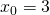
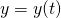

Gradient descent is a standard tool for optimizing complex functions iteratively within a computer program. Its goal is: given some arbitrary function, find a minumum. For some small subset of functions - those that are convex - there's just a single minumum which also happens to be global. For most realistic functions, there may be many minima, so most minima are local. Making sure the optimization finds the "best" minumum and doesn't get stuck in sub-optimial minima is out of the scope of this article. Here we'll just be dealing with the core gradient descent algorithm for finding some minumum from a given starting point.
The main premise of gradient descent is: given some current location x in the search space (the domain of the optimized function) we ought to update x for the next step in the direction opposite to the gradient of the function computed at x. But why is this the case? The aim of this article is to explain why, mathematically.
This is also the place for a disclaimer: the examples used throughout the article are trivial, low-dimensional, convex functions. We don't really need an algorithmic procedure to find their global minumum - a quick computation would do, or really just eyeballing the function's plot. In reality we will be dealing with non-linear, 1000-dimensional functions where it's utterly impossible to visualize anything, or solve anything analytically. The approach works just the same there, however.
Building intuition with single-variable functions
The gradient is formally defined for multivariate functions. However, to start
building intuition, it's useful to begin with the two-dimensional case, a
single-variable function  .
.
In single-variable functions, the simple derivative plays the role of a gradient. So "gradient descent" would really be "derivative descent"; let's see what that means.
As an example, let's take the function . Here's its plot, in red:

I marked a couple of points on the plot, in blue, and drew the tangents to the function at these points. Remember, our goal is to find the minimum of the function. To do that, we'll start with a guess for an x, and continously update it to improve our guess based on some computation. How do we know how to update x? The update has only two possible directions: increase x or decrease x. We have to decide which of the two directions to take.
We do that based on the derivative of . The derivative at some point
 is defined as the limit [1]:
is defined as the limit [1]:
Intuitively, this tells us what happens to when we add a very small
value to x. For example in the plot above, at  we have:
This means that the slope of at is 4; for
a very small positive change h to x at that point, the value of
will increase by 4h. Therefore, to get closer to the minimum of
we should rather decrease a bit.
Let's take another example point, . At that point, if we add a
little bit to , will decrease by 4x that little
bit. So that's exactly what we should do to get closer to the minimum.
It turns out that in both cases, we should nudge in the direction
opposite to the derivative at . That's the most basic idea behind
gradient descent - the derivative shows us the way to the minimum; or rather,
it shows us the way to the maximum and we then go in the opposite direction.
Given some initial guess , the next guess will be:
Where is what we call a "learning rate", and is constant for each
given update. It's the reason why we don't care much about the magnitude of the
derivative at , only its direction. In general, it makes sense to
keep the learning rate fairly small so we only make a tiny step at at time. This
makes sense mathematically, because the derivative at a point is defined as the
rate of change of assuming an infinitesimal change in x. For
some large change x who knows where we will get. It's easy to imagine cases
where we'll entirely overshoot the minimum by making too large a step [2].
Multivariate functions and directional derivatives
With functions of multiple variables, derivatives become more interesting. We can't just say "the derivative points to where the function is increasing", because... which derivative?
Recall the formal definition of the derivative as the limit for a small step
h. When our function has many variables, which one should have the step added?
One at a time? All at once? In multivariate calculus, we use partial derivatives
as building blocks. Let's use a function of two variables -  as an
example throughout this section, and define the partial derivatives w.r.t. x
and y at some point :
as an
example throughout this section, and define the partial derivatives w.r.t. x
and y at some point :
When we have a single-variable function , there's really only two
directions in which we can move from a given point - left (decrease
x) or right (increase x). With two variables, the number of possible
directions is infinite, becase we pick a direction to move on a 2D plane.
Hopefully this immediately pops ups "vectors" in your head, since vectors are
the perfect tool to deal with such problems. We can represent the change from
the point as the vector
[3].
The directional derivative of along  at
is defined as its rate of change in the direction of the
vector at that point. Mathematically, it's defined as:
at
is defined as its rate of change in the direction of the
vector at that point. Mathematically, it's defined as:
The partial derivatives w.r.t. x and y can be seen as special cases of this definition. The partial derivative is just the directional direvative in the direction of the x axis. In vector-speak, this is the directional derivative for , the standard basis vector for x. Just plug into (1) to see why. Similarly, the partial derivative is the directional derivative in the direction of the standard basis vector .
A visual interlude
Functions of two variables are the last frontier for meaningful
visualizations, for which we need 3D to plot the value of for each
given x and y. Even in 3D, visualizing gradients is significantly harder
than in 2D, and yet we have to try since for anything above two variables all
hopes of visualization are lost.
Here's the function plotted in a small range around zero.
I drew the standard basis vectors and
[4] and some combination of them
.

I also marked the point on where the vectors are based. The goal
is to help us keep in mind how the independent variables x and y change, and
how that affects . We change x and y by adding some small
vector to their current value. The result is "nudging"
in the direction of . Remember our goal for this
article - find such that this "nudge" gets us closer to a
minimum.
Finding directional derivatives using the gradient
As we've seen, the derivative of in the direction of
is defined as:
![\[D_{\vec{v}}f(x_0,y_0)=\lim_{h \to 0}\frac{f(x_0+ah,y_0+bh)-f(x_0,y_0)}{h}\]](../../images/math/9f2c62d64f016bd77712873294a0f5e64537b1ab.png)
Looking at the 3D plot above, this is how much the value of
changes when we add to the vector . But how do we do that? This limit definition doesn't look like
something friendly for analytical analysis for arbitrary functions. Sure, we
could plug and in there and do the
computation, but it would be nice to have an easier-to-use formula. Luckily,
with the help of the gradient of it becomes much easier.
The gradient is a vector value we compute from a scalar function. It's defined as:
It turns out that given a vector , the directional derivative
can be expressed as the following dot product:
![\[D_{\vec{v}}f=(\nabla f) \cdot \vec{v}\]](../../images/math/49933775272512c4c8686d9f9692c8ea01e1c97d.png)
If this looks like a mental leap too big to trust, please read the Appendix section at the bottom. Otherwise, feel free to verify that the two are equivalent with a couple of examples. For instance, try to find the derivative in the direction of at . You should get using both methods.
Direction of maximal change
We're almost there! Now that we have a relatively simple way of computing any
directional derivative from the partial derivatives of a function, we can
figure out which direction to take to get the maximal change in the value of
.
We can rewrite:
As:
Where  is the angle between the two vectors. Now, recall that
is normalized so its magnitude is 1. Therefore, we only care
about the direction of w.r.t. the gradient. When is this
equation maximized? When , because then .
Since a cosine can never be larger than 1, that's the best we can have.
is the angle between the two vectors. Now, recall that
is normalized so its magnitude is 1. Therefore, we only care
about the direction of w.r.t. the gradient. When is this
equation maximized? When , because then .
Since a cosine can never be larger than 1, that's the best we can have.
So gives us the largest positive change in . To
get , has to point in the same direction as the
gradient. Similarly, for we get
and therefore the largest negative change in
. So if we want to decrease the most,
has to point in the opposite direction of the gradient.
Gradient descent update for multivariate functions
To sum up, given some starting point , to nudge it in the
direction of the minimum of , we first compute the gradient of
at . Then, we update (using vector notation):
![\[\langle x_1,y_1 \rangle=\langle x_0,y_0 \rangle-\eta \nabla{f(x_0,y_0)}\]](../../images/math/66a0a92b6ff9a4c0d2162a41484ab17115f57bd7.png)
Generalizing to multiple dimensions, let's say we have the function taking the n-dimensional vector . We define the gradient update at step k to be:
Previously, for the single-variate case we said that the derivatve points us to the way to the minimum. Now we can say that while there are many ways to get to the minimum (eventually), the gradient points us to the fastest way from any given point.
Appendix: directional derivative definition and gradient
This is an optional section for those who don't like taking mathematical statements for granted. Now it's time to prove the equation shown earlier in the article, and on which its main result is based:
As usual with proofs, it really helps to start by working through an example or
two to build up some intuition into why the equation works. Feel free to do that
if you'd like, using any function, starting point and direction vector
.
Suppose we define a function  as follows:
as follows:
![\[w(t)=f(x,y)\]](../../images/math/dc37eb3cf47966d7338e561faffeffbb291085c5.png)
Where and  defined as:
In these definitions, ,  , a and b are constants, so
both and are truly functions of a single variable.
Using the chain rule), we know that:
, a and b are constants, so
both and are truly functions of a single variable.
Using the chain rule), we know that:
Substituting the derivatives of and , we get:
One more step, the significance of which will become clear shortly. Specifically,
the derivative of at is:
Now let's see how to compute the derivative of at using
the formal limit definition:
But the latter is precisely the definition of the directional derivative in equation (1). Therefore, we can say that:
From this and (2), we get:
This derivation is not special to the point - it works just as
well for any point where has partial derivatives w.r.t. x and
y; therefore, for any point where is
differentiable:
| [1] | The notation  means: the value of the
derivative of w.r.t. x, evaluated at . Another
way to say the same would be . means: the value of the
derivative of w.r.t. x, evaluated at . Another
way to say the same would be . |
| [2] | That said, in some advanced variations of gradient descent we actually want to probe different areas of the function early on in the process, so a larger step makes sense (remember, realistic functions have many local minima and we want to find the best one). Further along in the optimization process, when we've settled on a general area of the function we want the learning rate to be small so we actually get to the minimum. This approach is called annealing and I'll leave it for some future article. |
| [3] | To avoid tracking vector magnitudes, from now on in the article we'll be dealing with normalized direction vectors. That is, we always assume that . |
| [4] | Yes, is actually going in the opposite direction so it's , but that really doesn't change anything. It was easier to draw :) |